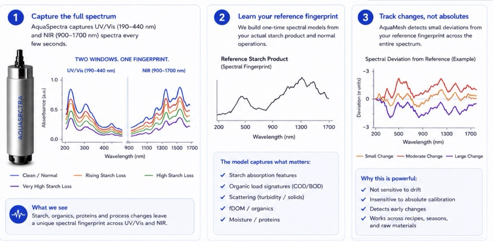

Case study · Corn wet milling
One pound of starch per bushel is 160 tons a day.
An assessment prepared for a corn wet-milling facility. At this scale small upstream losses stop being small, and by the time they reach wastewater the product is gone. So AquaMesh put NIR starch detection on the process stream and wired it straight into the operational AI — the sensor sees the starch leaving, the platform tells the operator which knob to turn.
- Corn processed
- 320,000 bushels a day
- Starch equivalent moving
- 10.2M lb a day
- Water
- 20.5M gallons a day
- One lb per bushel
- 160 tons a day
Throughput and water figures are publicly reported operating scale. Starch quantity uses the EPA average wet-milling yield. No actual loss rate is assumed for this facility.
Where the problem shows up
Find the loss before it reaches wastewater.
In starch processing, small upstream losses become lost yield, excess water load, higher energy use and more treatment demand. Each step has its own way of letting product escape.

Wastewater is where the problem appears. The value is in finding where it started. Lab results come back hours later, when the load has already moved through the plant.
The two halves, integrated
NIR reads the starch. The AI says what to do about it.
Neither half is much use alone. A spectrum nobody acts on is a chart; an AI with no starch signal is guessing. AquaMesh ships them as one chain.
- 1
Connect what exists
Historian, PLC/SCADA, lab results, flow, pressure, temperature, conductivity, turbidity, utilities, production and CIP records.
- 2
Add NIR where the process is blind
AquaSpectra™ with the NIR window reads the starch signature directly in the stream, alongside solids, turbidity and organic load — placed only where nothing measures product today.
- 3
Learn what drives the loss
The platform ties the NIR signal to feed variability, machine behaviour, wash conditions and dewatering, so a rise points at a cause instead of an alarm.
- 4
Hand the operator an action
Recommendations first, in the operator's language, with the value attached. Only after validation can AquaMesh execute approved changes inside the plant's own limits — and verify the result.
The measurement
Two windows. One fingerprint.
AquaSpectra captures UV/Vis (190–440 nm) and NIR (900–1700 nm) spectra every few seconds. The NIR window is what sees starch directly. A one-time model of the plant's own product becomes the reference, and the platform watches for deviation from it rather than trying to hold an absolute calibration.

| Indicator | Deviation | What it means |
|---|---|---|
| NIR starch signal (900–1700 nm) | ↑ 2.8 σ | Direct starch signature increase |
| Starch Loss Index (yield protection) | ↑ 2.6 σ | Starch escaping to wastewater |
| fDOM (UV254) | ↑ 2.1 σ | Higher soluble organics |
| COD/BOD proxy (TOC + UV254/SAC254) | ↑ 1.9 σ | Rising organic load |
| Turbidity / solids | ↑ 1.4 σ | Higher suspended solids |
- High-COD wastewater per tonne of starch produced
- 10–20 m³
- Typical secondary effluent
- 200–250 mg/L COD
- COD removal in healthy anaerobic digesters
- >89%
- Lag on lab results while the load moves
- Hours
Industry reference figures, not measurements from this facility. Sources: Anaerobic Digestion Starch Wastewater Guide; iFactory (BOD, COD & compliance); LAR corn-milling TOC monitoring; MDPI 13(10):1762 flocculation study.
In the platform
What the operator actually gets when the NIR signal moves.
Not a spectrum. A named cause, the knob to turn, the tags that prove it, and what the change is worth per hour — with accept, resolve and dismiss on the same card.
NIR reads the stream
The starch signature, every few seconds, in-situ — no sample, no lab queue.
The model names a cause
Deviation from the plant's own reference, tied to the unit that moved first.
The operator gets an action
One setpoint, one shift to observe, inside limits the plant already set.
The result is verified
The same signal confirms whether the yield actually came back.
The proposal
Start small. Prove value in 90 days.
One process area, quantified: what the losses are, what they cost, and whether the recommendations move the number.
- 1
Days 1–30 · Establish the baseline
Connect to existing data, map the process and define KPIs, quantify current losses and variability, identify the high-impact opportunities.
- 2
Days 31–60 · Find and prioritize
Detect and rank the top loss mechanisms, correlate drivers across process, quality and effluent, deliver real-time insight, validate with operators and lab data.
- 3
Days 61–90 · Prove and plan
Quantify the impact of the recommended actions, build the economic case, define the scope for control and sensing, and lay out the deployment roadmap.
No automated control in the pilot. Insights and recommendations first; control comes only after validation and approval.
What is your process losing?
The same assessment starts with your data: the historian you already keep, your lab results, and the process you already run.
Anonymized case study built from publicly reported operating scale and industry references. Deviation figures are illustrative of the method, not measurements from this facility.